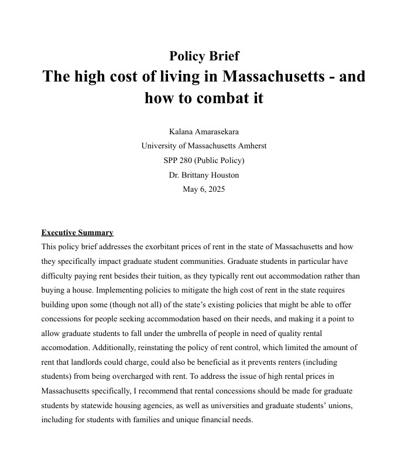
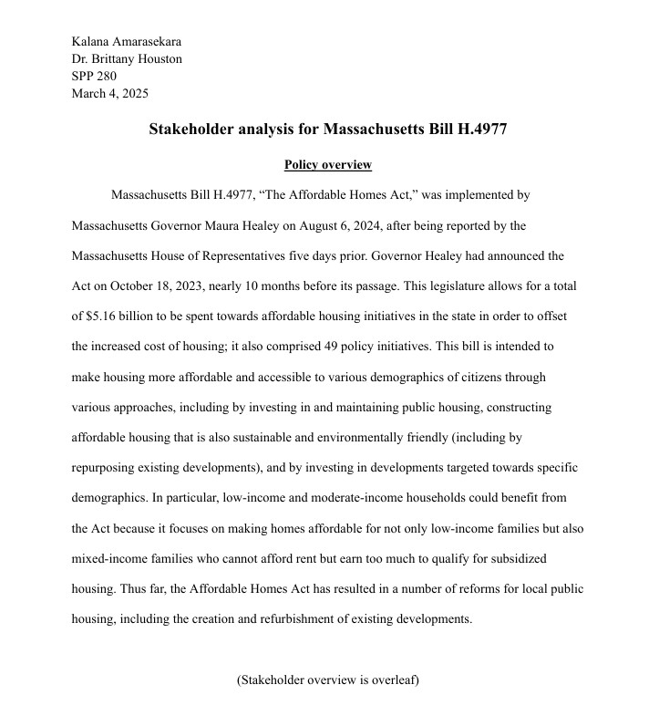
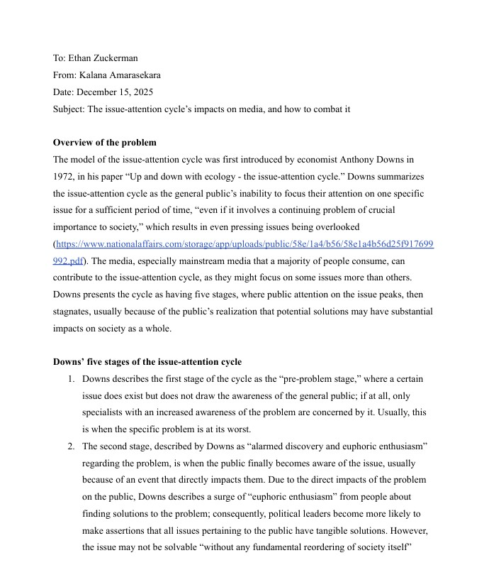
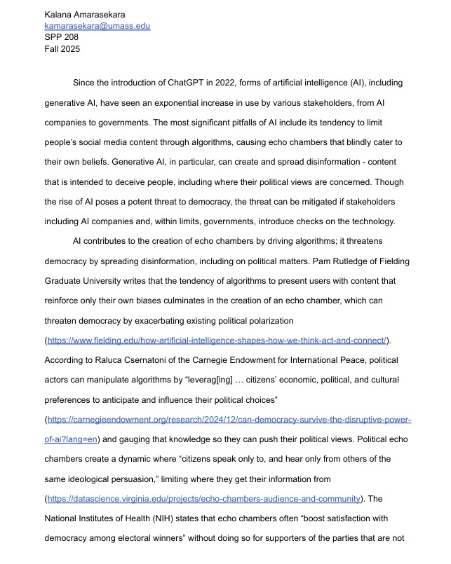

Policy brief

I wrote this policy brief for my introductory Public Policy class, proposing a workable solution to the issue of unaffordable rent rates for graduate students in Massachusetts.
Stakeholder analysis

I wrote this stakeholder analysis for my introductory Public Policy class, analyzing the stakeholders involved in the implementation of the state's Affordable Homes Act.
Solutions memo

I wrote this solutions memo for my course "Defending Democracy in the Digital World," discussing how Anthony Downs's "issue-attention cycle" could be countered by providing news outlets with resources.
Position paper on AI

I wrote this essay for my course "Defending Democracy in the Digital World," arguing that generative artificial intelligence could be mitigated as a threat to democracy when regulated by stakeholders.